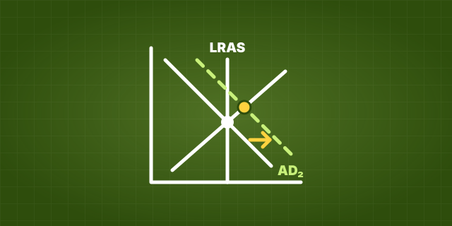

AP® Macroeconomics · free to start May 2027 exam
AP®Macroeconomics
every graph, every shift
Each topic taught from scratch for the May 2027 exam, then practice that has you draw and shift every graph, and causal chains built link by link the way the readers score them.
Pick up where you left off
The path through AP® Macroeconomics
Every lesson, skill, practice set and unit test, in course order.
01Unit 1 · 5 to 10% of the examBasic Economic Concepts6 topics
02Unit 2 · 12 to 17% of the examEconomic Indicators and the Business Cycle7 topics
03Unit 3 · 17 to 27% of the examNational Income and Price Determination9 topics
04Unit 4 · 18 to 23% of the examFinancial Sector7 topics
05Unit 5 · 20 to 30% of the examLong-Run Consequences of Stabilization Policies7 topics
Start with 5.1 Fiscal and Monetary Policy Actions in the Short Run
06Unit 6 · 10 to 13% of the examOpen Economy: International Trade and Finance6 topics
jump anywhere, everything you finish stays done
Finishing a lesson or marking a stop done moves the path; practice answers do not. Your path’s answers are saved on this device; what you finish counts everywhere you are logged in.
Scarcity Spotter
Level 1 · 0 XP · 0 / 100 XP to Level 2. One level and one streak count across every LevlPrep course.
Axes, Variables and Points
Graph skills you need. Its lessons and every notes page are free.
Start the first lessonMissed questions come back
Anything you miss returns when you are about to forget it, not on a fixed date.
Open review →A little every day
Questions, cards and tool steps count toward a daily goal and a streak shared across every LevlPrep subject. 15 practice questions a day are free.
Practice now →Tools

AP® Macroeconomics
$17.50$25school year
| What you get | Free$0 | Premium$17.50$25 |
|---|---|---|
| Notes, glossary, flashcards and unit sheets | Included | Included |
| The graphs and formulas to know, explained | Included | Included |
| Interactive lessons | Units 1 and 2, and graph skills lessons | Every unit |
| Practice and review questions | 15 a day | Unlimited |
| Trainers | Three | Every trainer |
| Free-response questions and unit tests | Not included | Included |
| Full practice exams | One | Every one |
| Cram kit study plan | Outline | Fitted to your weakest units |
| Mastery dashboard | Not included | By unit, topic and skill |
| Your progress, XP, streak and weak topics | Included | Included |
One pass, valid through 30 June 2027 whenever you buy it. Founding price · $25 from February 1, 2027
Full refund within 7 days · Never renews · Secure checkout by Polar
For comparison: UWorld is $149 and Fiveable is $79 a year (checked November 2026). Source: Fiveable, UWorld.
Questions
Is this course free?
What’s on the exam?
Has it been reviewed?
Is LevlPrep affiliated with the College Board?
More questions, about who makes LevlPrep and how the questions are written, are answered on About.